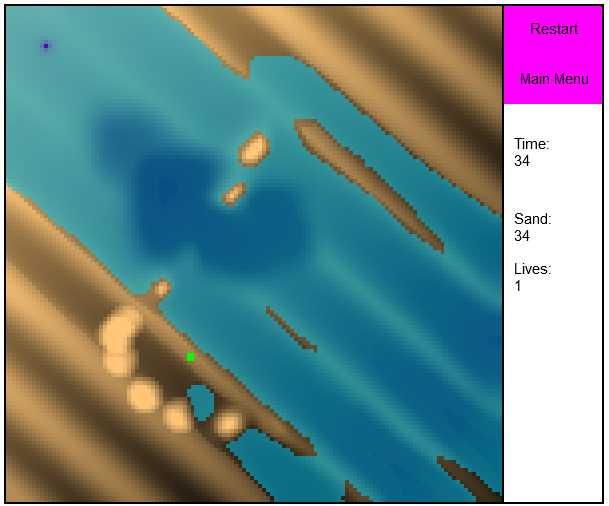

Programming
Github account linkI became interested in programming from a really young age.
Growing up playing games like Red Alert - and wondered how cool it would be if X did Y? Or if this tank had bigger guns? I decided that i would try and understand what happened "under the hood".
Finally I also had a love of simulations - games where I could sit back and watch it go!
Projects
Raytracing - 2020
I wanted to write a GPGPU raytracer, this was the other half of my lofty goal of rewriting waterflow in 3d I played around with 3d fluid and sand simulations, but also worked on a 3d visulisation that would allow the water to be at the forefront.
Waterflow Raytraced
Waterflow3D - 2019 onwards
I wanted to revisit the original waterflow idea and move it into 3d. The original plan was to create an eulerian fluid simulation and slap that into a voxel world. I ended up writing a simple fluid sim, and smoothed partical hydrodynamics system (SPH) and a material point method (MPM) simluation. None of these ran at a frame budget and accuracy required and this will be revisited.
The material point method could feasibly handle the 3d sand and water multiphase sim - but currently runs too slow. Gif shows the results.

MPM simple implementation
WaterFlow3D
Ludum dare 41 entry - 2018
Top down driving game
You are in the hotseat of an ambulance - driving recklessly is your game though
Game made in 48 hours
LD_41Releases
Waterflow - 2015
Have you ever played on a beach - and made dams to hold the water flowing out with the tide? Now you can do it in the browser (WebGL powered)
Waterflow page
Waterflow github
Typescript test - 2013
Kill the zombies
Zombies